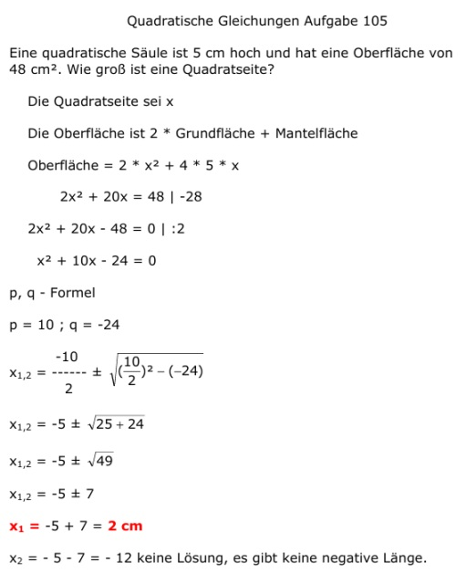

Aufgabe 105 Eine quadratische Säule ist 5 cm hoch und hat eine Oberfläche von 48 cm2. Wie groß ist eine Quadratseite? Die Quadratseite sei x Die Oberfläche ist 2 * Grundfläche + Mantelfläche Oberfläche = 2 * x2 + 4 * 5 * x 2x2 + 20x = 48 | -28 2x2 + 20x - 48 = 0 | :2 x2 + 10x - 24 = 0 p, q - Formel p = 10 ; q = -24  x1,2 = -5 ± 7 x1 -5 + 7 = 2 cm x2 = -5 - 7 = - 2 keine Lösung, es gibt keine negative Länge